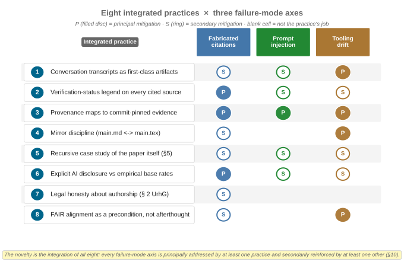
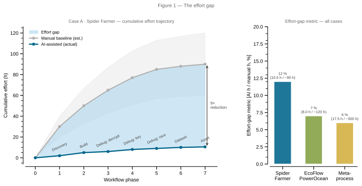
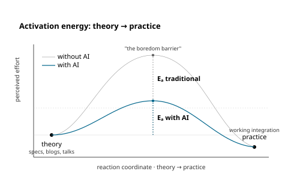

What is this?
A research paper and its full evidence trail — case studies, AI conversation transcripts, provenance maps, figure-generation scripts — published as a single, auditable, git-tracked artifact.
Central thesis. The dominant security posture for consumer IoT is economic, not cryptographic. Proprietary protocols and obfuscated APKs raise the effort gap high enough that a casual researcher gives up. Large language models compress that gap by an order of magnitude — asymmetrically faster for interoperability than for exploitation. We document how far the gap has collapsed, how asymmetrically, and what to do about it.
Source: paper/main.md §1 / paper/main-condensed.md §1; mirrored in README.md.

paper/figures/fig11-eight-practices.svg (ILL-05); paper §10.Headline numbers
| Spider Farmer | EcoFlow PowerOcean | Meta-process (this paper) | |
|---|---|---|---|
| Defence model | AES-128-CBC keys/IVs hardcoded in APK | 3 undocumented API surfaces; vendor docs cover only 1 | None — open by construction |
| AI-assisted effort | ~10.5 h across 7 transcripts | ~8 h across 3 transcripts | ~17.5 h (running) |
| Estimated manual baseline | 60–120 h | 80–160 h | ~300 h |
| Effort-gap compression | ~12 % of manual | ~7 % of manual | ~6 % of manual |
| Live credentials exposed | Yes (MQTT) — redacted | No (token-bearer) | N/A |
| Dual-use blast radius | Per-device horticulture control | Grid-in / battery-reserve / EV-charger writes | Fabricated citations, unsourced legal opinions, redaction failures |
Source: paper/main.md §3.7, §4.7, §5.7, §6.1; reproduced as Table 1 in the condensed paper.

Data:
paper/figures/data/effort-gap.csv; script fig1-effort-gap.py.
Eight integrated practices
The methodological contribution of this paper is the integration of eight individually unoriginal practices into a discipline under which AI-assisted research is auditable per artifact:
Transcript preservation
Every AI conversation that contributed to a claim is archived verbatim alongside the prose.
Verification-status labelling
Every cited source carries a ladder rung; a paper claim may only invoke a source at its current rung.
Provenance maps
Every technical claim ties to a transcript, an embedded vendor file/line, and a pinned commit SHA.
Mirror discipline
Markdown prose source and LaTeX submission source are kept in lock-step — neither can drift.
Recursive meta-process case study
The paper documents its own AI-assisted production as evidence for the methodology.
Base-rate-anchored AI disclosure
Quantitative fabricated-citation and sloppification base rates are cited inline.
Legal honesty about authorship
AI-generated prose is marked as such; AI-generated legal opinion is excluded unless paired with a sourced primary text.
FAIR alignment as a precondition
CFF, Zenodo, CodeMeta metadata present from day one — the proposed F(AI)²R extension below as the explicit forward direction.
Source: paper/main-condensed.md §4 (full enumeration); paper/main.md §10 (worked examples and axis-by-axis defence); also docs/human-ai-collaboration-process.md (process specification).
F(AI)²R — proposed extension for AI-assisted research
FAIR4RS [Chue Hong et al., 2022] extended the FAIR Guiding Principles to research software; FAIR4ML [RDA, 2024] extended them to machine-learning models. Neither yet covers AI-mediated research processes — exportable conversation transcripts, versioned prompts, tool-and-model version manifests, verification-status ladders, structured redaction policies.
We propose, as a target for community refinement rather than as a finished standard, a FAIR for AI-Assisted Research extension under the working name F(AI)²R (read F-A-I-A-I-R). The name folds (AI) into the canonical FAIR axes rather than appending an external 4AI suffix — the AI-assisted dimension is what the extension transforms in every axis.
Naming note (2026-05-05). Originally proposed 2026-05-04 as FAIR4AI; renamed on 2026-05-05 — 4AI heißt alles. The 2026-05-04 working name is preserved in docs/sources.md L-FAIR-3 and in the logbook for historical traceability (rule 1).
Source: docs/fair.md §F(AI)²R; paper/main.md §8.4; paper/main-condensed.md §4 (last paragraph). The PRISMA 2020 / GRADE crosswalk for the verification ladder lives at Methodology → Verification ladder.
The §8 ask
Don't inherit AI-research norms — generate them, now, while the practice is still being formed. The paper's Conclusion makes a four-part move: a terminological precision (broad-AI vs Gen-AI), a call-to-action to treat methodological norm-setting as itself a research activity, an invitation to AI-skeptics as co-norm-setters rather than opponents, and the candidate F(AI)²R extension above. The eight integrated practices are best understood as a condition catalogue for AI-assisted work to be defensible as research — not a manifesto, but a checklist whose items can be argued with row by row.
Source: paper/main.md §8 / paper/main-condensed.md §6.
Open an issue, change the paper
This project is designed to be argued with. The agent pipeline treats GitHub issues as first-class inputs: an issue you open here is a prompt for the next pass of the pipeline, not a wishlist item that goes to a backlog and dies. Three labels route issues into specific pipeline stages — pick the one that fits your contribution:
- idea — a hypothesis, device, paper, or framing worth investigating. Routes to Stage 1 (Research Protocol).
- critique — a specific challenge to a claim, figure, citation, or framing. Routes to Stage 2 (Scientific Writer).
- provenance-gap — a missing transcript, an unreachable artifact, an unverifiable claim. Routes to Stage 1 plus a meta-process note.
Source: README.md § Contribute — open an issue, change the paper; orchestrator dispatch table in docs/prompts/orchestrator-prompt.md.
Cite this work
@misc{krebs2026obscurity,
author = {Krebs, Florian},
title = {AI-Assisted Hacking: Key to Interoperability or Security Nightmare?},
year = {2026},
howpublished = {\url{https://github.com/noheton/Obscurity-Is-Dead}},
note = {ORCID: 0000-0001-6033-801X. Independent researcher (personal capacity).
Preprint. Zenodo DOI pending first release.}
}Machine-readable: CITATION.cff · .zenodo.json · codemeta.json.